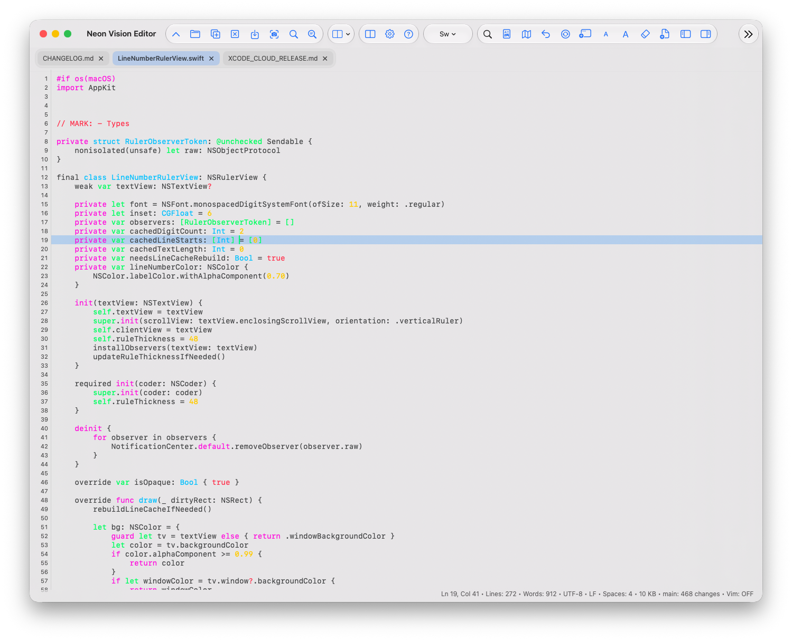

App Store
在支持的 Apple 平台上由 Apple 管理安装。商店版本在审核期间可能晚于直接发布渠道。
打开 App Store在 Apple 设备上原生编辑
面向 Markdown 作者和开发者，Neon Vision Editor 保留轻量编辑器的实用部分：快速文件、清晰源码、完整预览，以及不会带来意外的共享文档。

选择发布渠道
选择 Apple 管理的更新、最新的 Mac 公证版本、Homebrew，或早期 TestFlight 版本。
在支持的 Apple 平台上由 Apple 管理安装。商店版本在审核期间可能晚于直接发布渠道。
打开 App Store最新稳定的直接版本，由 Apple 签名并公证，包含可选的命令行助手。
下载 DMG通过官方 Homebrew Cask 安装同一稳定且已公证的 macOS 版本。
brew install neon-vision-editor
在更新进入公开 App Store 前，抢先体验 Mac、iPhone 和 iPad 的修复。
加入 TestFlight由 h3p 开发
我是 Hilthart Pedersen，常用名是 h3p，在 GitHub 上使用 h3pdesign。我将 Neon Vision Editor 作为一款独立的 Apple 编辑器进行开发，定位在基础文本编辑器和完整 IDE 之间。
最新直接发布的 macOS 版本主要新增了从纯文本转换为 Markdown 的工作流。
许多有用的文字都从凌乱的复制笔记、会议材料和草稿开始。Neon 可以将其转换为可审阅的 Markdown 提案，不会悄悄替换原文，而是提供可检查并有意接受的结构化起点。
在支持的 Mac 上可使用 Apple Intelligence，也可以自行配置其他 AI 服务商。我们加入了取消、服务不可用提示和超时，让编辑器不会让你猜测操作是否仍在进行。
不过，我个人最满意的功能是共享文件同步。
如果文档位于 iCloud Drive、网络文件夹，或在其他应用中打开同一文件，编辑器可能错过外部更改，甚至覆盖眼前的工作。
Neon 会监视打开文档的外部更新。文件在其他位置更改且当前标签页干净时，它会原地刷新，并保留光标、选择、滚动位置和当前预览源。
v1.4.0 新功能
Neon 的 macOS 编辑器现在直接基于磁盘中的文件工作，并在正在编辑的位置周围保留一个有界的虚拟视口。这样无需在每次编辑时重建完整文档缓冲区，同时保留正常的编辑流程。

基于文件的编辑器架构
虚拟视口会跟随滚动位置，并在替换活动窗口时保留光标和选区。语法处理和行布局仅限于可见范围。
编码、换行符、外部更改处理和原子保存仍属于同一文件工作流。100 MB 及以上的文件会作为清晰标记的只读部分预览打开，便于安全检查。
日常编辑器
笔记会变成文档，快速 HTML 编辑需要渲染检查，共享文件会在其他设备上变化。Neon 为这些时刻而设计，不会把工作变成 IDE 项目。
在保留原文控制权的同时，将无结构文本转换为 Markdown 提案。
无需切换应用，让 Markdown、HTML 和 SVG 源码靠近渲染结果。
从 iCloud Drive、网络文件夹或其他应用刷新干净文档，不替换未保存的工作。
从粗略笔记到有用结构
复制的笔记、旧文档或草稿通常已有所需结构。Neon 将其转换为可审阅的 Markdown 草稿，不会悄悄更改源码。
Plain text → Markdown
在支持的 Mac 上可使用 Apple Intelligence 或已配置的服务商。结果始终是提案，你可先审阅标题、列表和格式再决定。
取消、清晰的不可用状态和安全超时都是工作流的一部分。

1.0.2 版本新增
无需离开 Neon，即可询问当前文件、项目结构或选中片段。回答保存在可审阅的对话中，Markdown 格式和语法高亮代码保持易读。


Shared-file sync
iCloud Drive、网络文件夹或其他应用中的文档可能在打开时发生变化。Neon 会监视这些变化并原地刷新干净标签页，无需关闭再重新打开文件。
它会保留光标、选择、源码视口和预览源。存在未保存编辑时，Neon 不会替换缓冲区，现有的审阅选择仍由你决定。
Clean tab: refresh the updated file in place.
Unsaved changes: keep the local 版本 protected.
Review deliberately: choose Keep Local, Reload from Disk, or Compare.
源码与渲染结果
Markdown 在 Neon 中不是事后功能。在 Mac 和 iPad 上，完整预览可置于源码旁；在 iPhone 上会打开专注阅读视图。
HTML 和 SVG 预览遵循同一理念：编辑源码并查看输出，无需离开文件工作流。

工具栏预设与布局稳定性
紧凑标签让 macOS 和 iPadOS 工具栏更易阅读；在空间有限的 iPhone 上，工具栏优先使用图标。预设让你可以在日常编辑、专注写作、开发、审阅和完整工作区之间快速切换。
此版本还恢复了 iOS 透明的状态栏和导航表面组合，同时不改变现有的编辑器和预览布局。
v1.2.0 新功能
v1.2.0 将 Neon 的范围从源文件和 Markdown 扩展到更多项目内容。PDF 和 PNG 现在可以加入响应式项目概览，PDF 高亮与关联的 Markdown 笔记则让研究内容始终连接到正在阅读的文档。
PDF 笔记与项目预览
在 PDF 中高亮一段内容，添加 Markdown 笔记，之后随时回到同一审阅上下文。项目卡片让 Markdown 和 PDF 文档更容易浏览，同时只为可见卡片加载高成本的缩略图。
在 iPhone 和 iPad 上，双击标签即可关闭，同时保留现有的未保存更改确认。

v1.1 已包含
全新的 Markdown 卡片预览会把文档文件夹整理成清晰的概览。打开文件前即可查看标题、路径、摘要、文件大小、标题数量和状态。
Markdown 卡片预览
项目不再只有一个文档时，卡片面板可以保留周围上下文。选择网格或列表，将它放在 Markdown 预览旁，然后选择卡片以打开现有编辑器标签页。
卡片保持轻量且便于检查：有限长度的摘要、标题数量、本地图片缩略图和清晰的文字状态，帮助你找到正确文件，无需打开第二个编辑器。


编辑器的演进
每个版本都在前一版基础上改进：先保护共享工作，再让编辑更明确、可靠恢复窗口，并强化连接界面的文档过渡。
恢复工具栏的简短标签，并将 Quick Look 整合到独立且可验证的构建方案中。
改进 macOS 虚拟编辑器、项目导航和 iPhone 的紧凑控制。
让独立 Markdown 和 Finder Quick Look 预览保持透明，同时提高可读性。
在切换工作区时保持 macOS 编辑器稳定，并将 Markdown 操作放在预览中。
在屏幕键盘上方显示编辑操作，并在切换预览或侧边栏时保持自动换行。
一个原生编辑器，适配不同设备
核心编辑功能覆盖所有平台。桌面专属工具保留在 macOS，紧凑和空间布局仍保持文档工作流。
| Capability | macOS | iPad | iPhone | visionOS |
|---|---|---|---|---|
| Markdown, HTML, SVG preview | Full Inline split pane |
Full Inline at regular width |
Compact Focused sheet |
Adaptive Spatial pane |
| Project sidebar | Full Files, Search, Git, Terminal |
Full Files and Search |
Compact Touch-first file workflow |
Adaptive Spatial workspace |
| PTY terminal | Full Project-aware shell |
— Desktop-only |
— Desktop-only |
— Desktop-only |
| Local Git tools | Full Changes, history, graph |
— Desktop-only |
— Desktop-only |
— Desktop-only |
| Code minimap | Full Opt-in and draggable |
Full Opt-in |
Compact Opt-in |
Adaptive Opt-in |
| Markdown con版本 | Full Selection or document review |
Adaptive Review flow |
Compact Review flow |
Adaptive Review flow |
| Encoding controls | Full Detect, reopen, transcode, BOM |
Preserved Open and export |
Preserved Open and export |
Preserved Open and export |
iPad 和 iPhone
在 iPad 和 iPhone 上保留相同的文档工作流，并使用适配设备的触控控件和专注布局。


帮助 hub
无需搜索完整项目 README，直接进入所需实用参考。
nve command →
Release notes
What changed in the latest stable build →
社区讨论
Questions, ideas, and longer conversations →
支持独立开发
Neon Vision Editor 由独立开发。赞助有助于持续测试、文档、可靠发布，以及 macOS、iPhone、iPad 和 Apple Vision Pro 的后续工作。
选择适合你的支持方式。所有贡献都是可选的，没有编辑器功能会因赞助而锁定。
通过项目所在的平台支持持续的开放开发。
Become a sponsor Membership选择持续支持 Neon 和未来应用的长期工作。
支持 on Patreon One-time tipMake a quick contribution when a release, fix, or new workflow helps you.
Buy a coffee Direct supportSend a flexible one-time contribution directly through PayPal.
支持 via PayPal获取最新的 macOS 直接版本，在 GitHub 关注开发，或在 Apple 设备上试用 App Store 和 TestFlight 版本。
{kind=link}